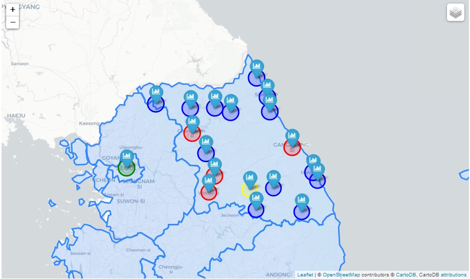
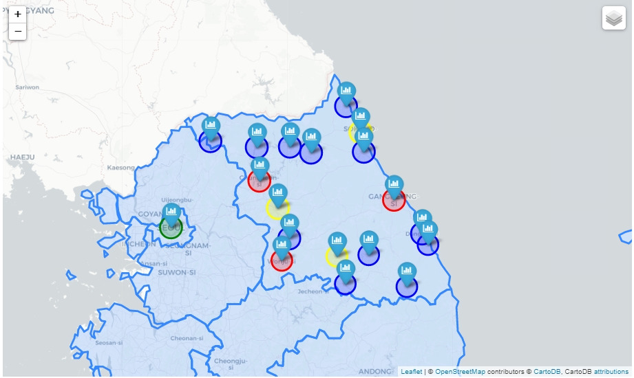
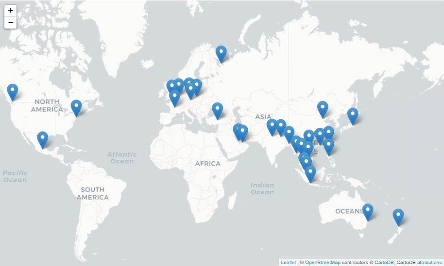

격리지별 분석(하차지 이동 현황)
본 하차지 현황 데이터는 인천국제공항 간 수송 버스의 중간 하차지 및 최종 종착지(하차지)를 반영환 결과임강원도 유입 해외 입국자들의 하차지 이동 현황을 분석한 후 지도그래프로 시각화한 결과
지도에 동그라미가 강원도의 각 시군별 위치이고 시군별 인원수에 따라 색을 다르게 표시함

격리지별 분석(격리지 이동 현황)
인천국제공항을 통해 입국한 해외 입국자 중 강원도 지역으로 격리지를 선택하고 이동한 현황을 분석한 후 지도그래프로 시각화한 결과지도에 동그라미가 강원도의 각 시군별 위치이고 시군별 인원수에 따라 색을 다르게 표시함
지역별 하차지, 격리지 현황 표
| 시군 | 하차지 선택인원(명) | 격리지 선택인원(명) | {$row['region']} | {$row['hacha']} | {$row['chadan']} | "; } ?>
|---|
